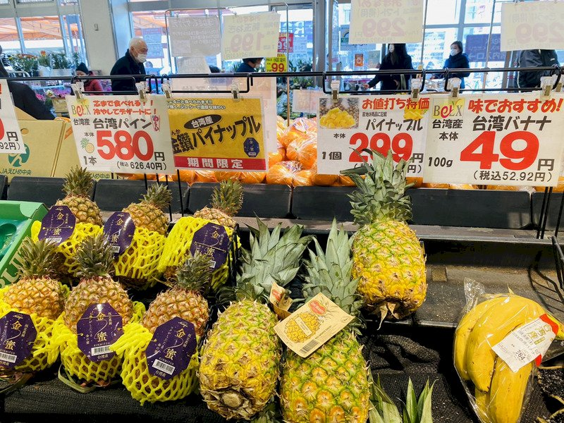
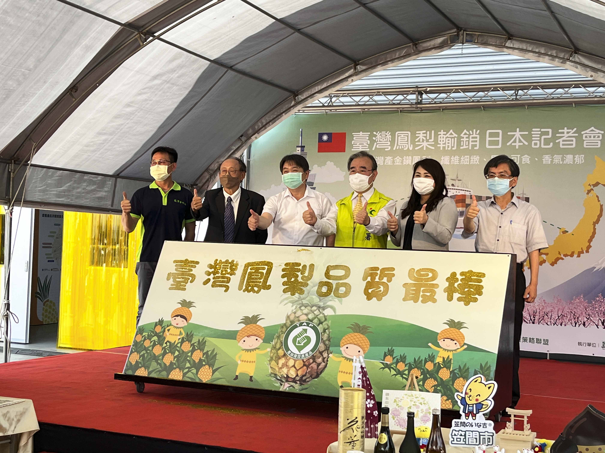

臺灣鳳梨上市於日本超市情形（圖／農糧署）

臺灣鳳梨輸銷日本記者會（圖／農糧署）
媒合優質國產鳳梨外銷中國大陸以外市場，包含日本、加拿大、香港及新加坡等國家，目標5,000公噸，實際達成5,000公噸。
透過生產控管（擴大產銷履歷驗證面積、辦理教育講習及觀摩會）、內銷通路（辦理產業媒合會）及休閒文化（辦理食農教育及產業推廣活動），鼓勵消費者選購國產鳳梨，有效帶動國內市場銷售量，目標4,000公噸，實際達成4,000公噸。
1.開發之鳳梨多元加工品(鳳梨黃金醬、鳳梨膠質飲及鳳梨葉黃素)並完成授權，目標3,000公噸，實際達成3,000公噸。
2.建立鳳梨外銷集貨包裝場品質管理標準及評鑑指標1式。
3.顧問輔導團執行集貨場健檢8式。
4.推廣鳳梨外銷集貨包裝場品質管理知識1式。
5.蒐集鳳梨市場與通路之資訊1式。
6.鳳梨多元加工產品授權利用3式。
7.辦理鳳梨食農推廣活動4次。
8.辦理產業媒合會、推廣省工機械應用觀摩講習4次。
9.優質鳳梨推廣日本學童營養午餐等外銷相關記者會1式。